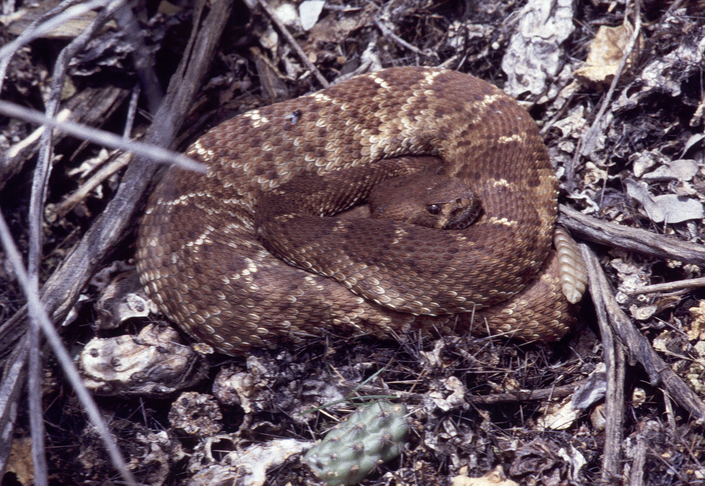
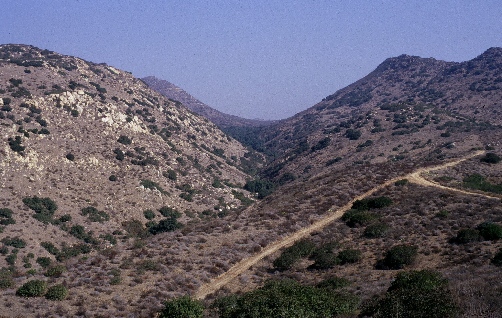
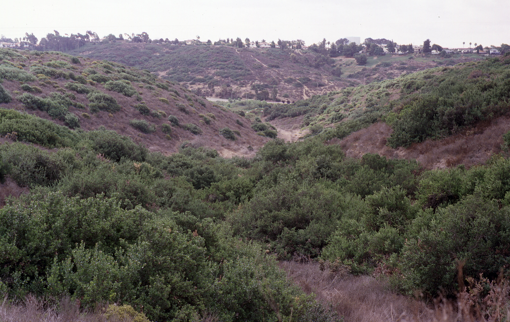
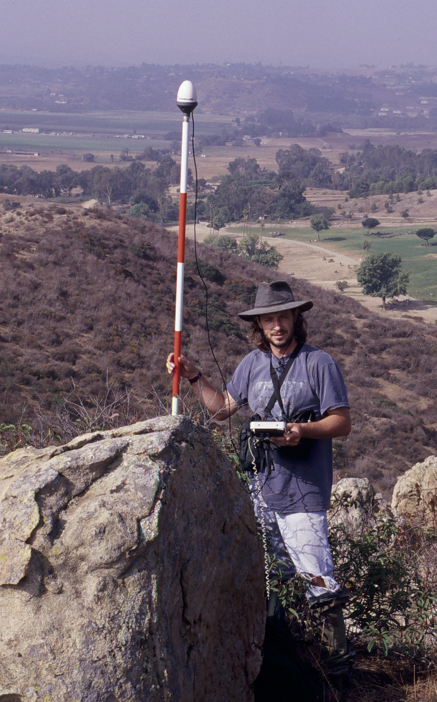
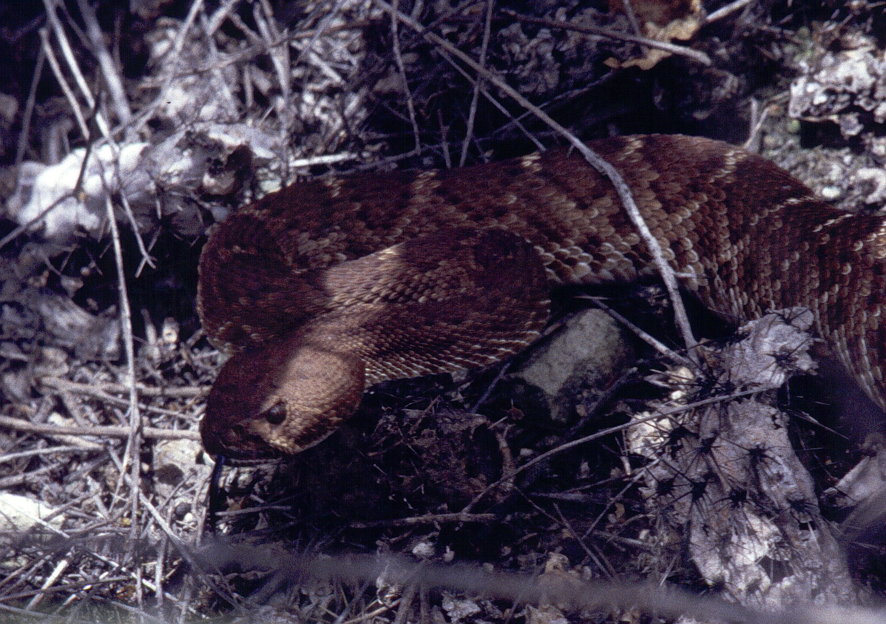
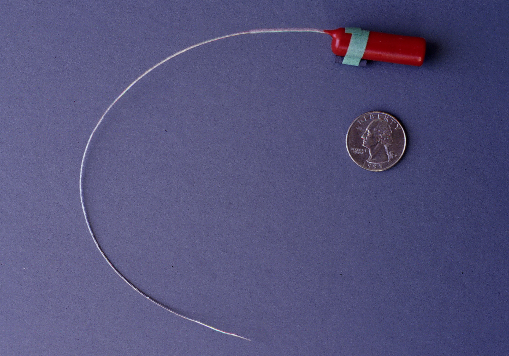
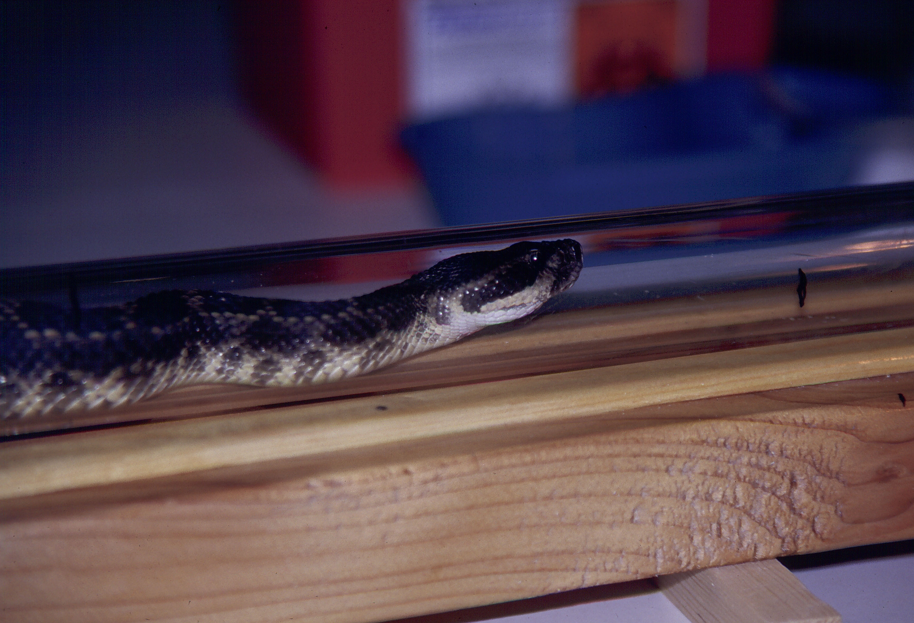
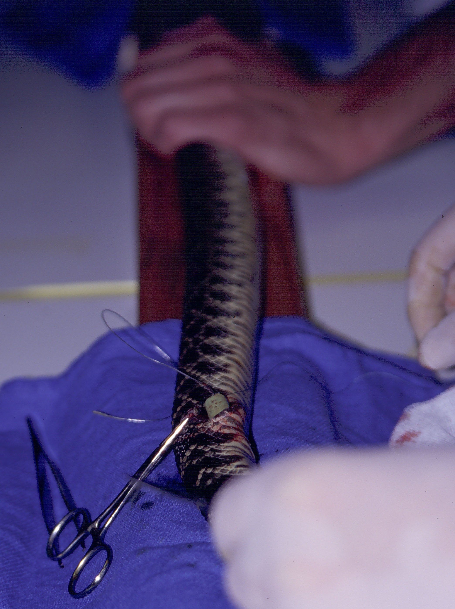
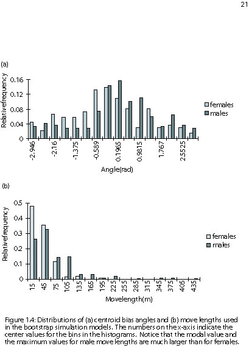
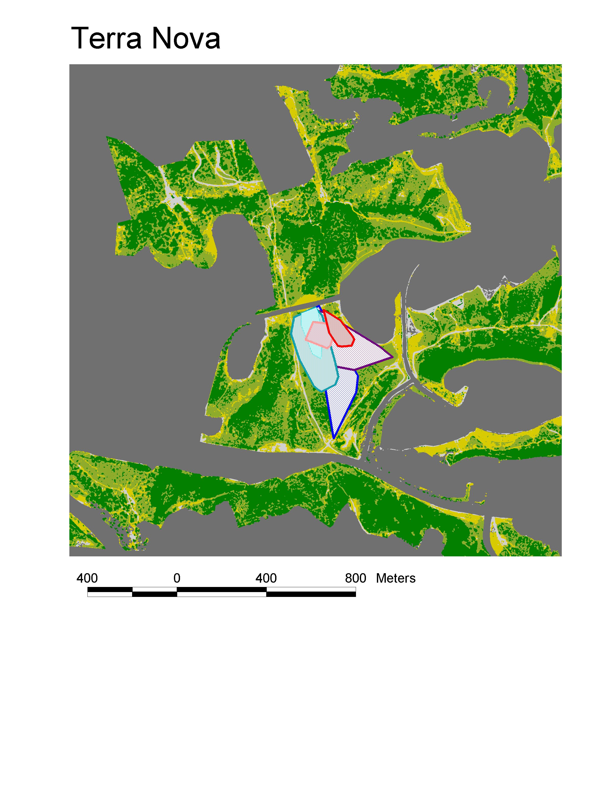

The Cognavitron — hover for details · click to navigate
Red Diamond Rattlesnakes
field-ecology
movement
herpetology
agent-based-models
M.S. thesis research: radio-tracking and movement ecology of Crotalus ruber in coastal southern California. Home range estimation, habitat selection, and early application of agent-based modeling to movement data.
My M.S. research at UC San Diego tracked red diamond rattlesnakes (Crotalus ruber) in the coastal chaparral of San Diego County — radio-telemetry, home range estimation, and an early attempt to model their movement statistically. It was also where I learned that fieldwork has a way of creating situations no one planned for.

Study Area
The study sites were fragments of coastal sage scrub and chaparral embedded in the urban matrix of northern San Diego — canyon reserves surrounded on all sides by residential development. The urban-wildland interface was not a backdrop; it was the research question. Were snakes in fragmented patches behaving differently from those in larger core areas? Were their home ranges smaller, their movements more constrained?


Field Methods
Snakes were located by radio-telemetry and GPS, typically multiple times per week. Each animal carried a small implanted transmitter — surgically placed under the skin along the body wall — that broadcast a unique radio frequency. I’d hike the canyons with a receiver and directional antenna, triangulating on the signal, and close in on foot until I found the snake under a rock, in a crevice, or coiled in the shade of a shrub.


Teddy
Before I could track snakes in the field, I needed to learn to implant transmitters surgically. The first one I did was under the supervision of a veterinarian from UCSD. The snake was a southern Pacific rattlesnake (Crotalus oreganus helleri) — a different species from my study animals, but the procedure is the same. I named him Teddy, after my advisor Ted Case. It seemed appropriate.


The procedure: anesthetize the snake, make a small incision along the lower body wall, place the transmitter, suture closed. Under a vet’s guidance the first time, then on my own after that. The antenna exits through the skin and trails behind the snake — the signal is what you follow through the chaparral.

Teddy recovered well, carried his transmitter, and eventually went back to his home range. My kids got to meet him before he did. I missed him when the study was over.
The Coachwhip
One day my labmate John came back from tracking horned lizards with an unusual problem. The lizard he’d been tracking had gone silent — and when he finally found the signal, it wasn’t moving. He dug around and found a coachwhip (Masticophis flagellum) that had swallowed the lizard, transmitter and all. We brought the snake to the lab and took an X-ray. There it was: the outline of the horned lizard, and the transmitter clearly visible inside.
Radio transmitters are not cheap, and they can be refurbished. My advisor, Ted Case — a serious herpetologist and ecologist — looked at the situation practically: “Kill the snake, get the transmitter.”
I hated that idea. Coachwhips are beautiful snakes, and this one had already demonstrated her personality — she’d bitten me three times in the nose when we caught her. I asked Ted if I could try to remove the transmitter surgically instead. He thought about it and said okay.
By this point I had implanted transmitters in rattlesnakes on my own. But removing a foreign object — with a horned lizard still partly around it — was different. I anesthetized the snake, made the incision, and worked the transmitter free. I sutured her back up and thought: I must have killed her.
She came around slowly. We kept her in the lab to recover — coachwhips are ectotherms; they don’t need to eat much, and healing moves at the pace of their metabolism. After about two weeks, I caught a fence lizard and offered it to her. She struck, turned it in her coils, and swallowed it cleanly. No hesitation. We gave her a few more weeks, then released her exactly where John had found her.
About nine months later, John was out tracking horned lizards in the same area. He spotted a coachwhip moving through the scrub. Scar on her side. Looked gravid. Moving like she owned the place.
Movement and Home Range
The main thesis work asked whether rattlesnake movement patterns differed between fragmented and core habitat patches. Males and females also differed substantially — males move more and farther, particularly during the breeding season.


Papers
Brown TK, Lemm JM, Montagne J-P, Tracey JA, Alberts AC (2008). Spatial ecology, habitat use, and survivorship of resident and translocated red diamond rattlesnakes (Crotalus ruber). In The Biology of Rattlesnakes. Loma Linda University Press, California.
Tracey JA (2000). Movement of Red Diamond Rattlesnakes (Crotalus ruber ruber) in Heterogeneous Landscapes in Coastal Southern California. M.S. Thesis in Biology, University of California, San Diego.